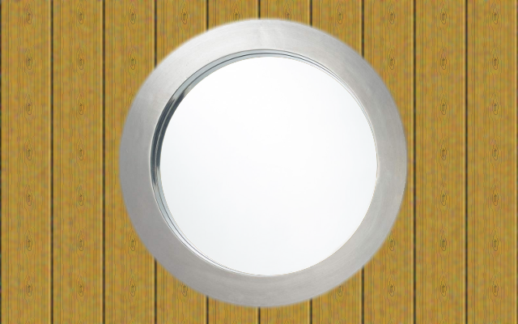
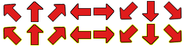

Avec l'arrivée de CSS3, les développeurs web ont vu leurs possibilités en webdesign se multiplier : que ce soient les coins arrondis, les fonds en dégradé ou encore les rotations, les nouvelles fonctionnalités utilisables laissent rêveur.
L'une des nouveautés principales est l'animation des éléments, appelée également transition. Et c'est ce que je vous propose de découvrir dans ce tutoriel ! :)
Avant de commencer, il est bon de savoir quand a lieu une transition en CSS. Vous n'êtes pas sans savoir qu'il est possible de modifier le style d'un élément d'une page lorsqu'un certain événement se déclenche. L'exemple le plus basique est celui des liens qui changent de couleur lors du passage de la souris.
La transition a lieu entre l'état initial de l'élément (un lien bleu, par exemple) et son état final après l'événement (admettons que le lien devienne rouge). Grâce à la transition, notre lien ne passera pas du bleu au rouge directement, mais il changera progressivement de couleur.
Bien entendu, il est possible de faire appel aux transitions sur d'autres propriétés que la couleur comme les dimensions des éléments ou leur position. Je vous invite à consulter cette page pour prendre connaissance des propriétés pouvant être animées. Notez cependant que la propriété transform n'y est pas répertoriée alors qu'elle peut pourtant bel et bien être utilisée : en effet, il est tout à fait possible d'effectuer une transition lors d'une rotation, par exemple. :)
Pour conclure avec cette première partie, retenez bien ceci : une transition, c'est tout simplement le changement d'état progressif d'une propriété CSS d'un état initial vers un état final voulu.
Finalement, comment faire des transitions ? C'est bien plus simple qu'il n'y paraît puisqu'il s'agit en fait de simples propriétés CSS.
Nous avons à notre disposition cinq propriétés pour effectuer des transitions et nous commencerons par étudier les deux principales :
transition-property ;
transition-duration.
La propriété transition-property permet d'indiquer les propriétés de notre élément qui doivent être animées. Par défaut, sa valeur est fixée à « all », ce qui signifie que toutes les propriétés seront sujettes à la transition. Si nous souhaitons appliquer des transitions sur plusieurs propriétés, il suffit de les séparer par des virgules :
p
{
/* Seules la couleur du texte et les dimensions
de nos paragraphes auront une transition. */
transition-property: color, width, height;
}
Il nous faut maintenant utiliser la propriété transition-duration pour indiquer le temps que durera la transition entre l'état initial de la propriété et son état final. Par défaut, cette propriété vaut 0s, il n'y a donc pas de transition. Il est possible d'indiquer un temps en secondes ou en millisecondes. Pour cela, il suffit d'ajouter respectivement s ou ms à la suite de notre valeur. :)
p
{
/* Seules la couleur du texte et les dimensions
de nos paragraphes auront une transition. */
transition-property: color, width, height;
/* La transition durera trois secondes. */
transition-duration: 3s;
}
Nos transitions sont définies, il ne nous reste plus qu'à indiquer quand les utiliser ! Et c'est là que c'est magique : les transitions auront lieu automatiquement dès que les propriétés concernées seront modifiées !
Modifions par exemple le style de nos paragraphes au passage de la souris. Je vous rappelle pour cela qu'il faut utiliser le pseudo-format:hover :
/* Style par défaut de nos paragraphes
(= état initial). */
p
{
/* Seules la couleur du texte et les dimensions
de nos paragraphes auront une transition. */
transition-property: color, width, height;
/* La transition durera trois secondes. */
transition-duration: 3s;
/* On stylise un peu plus nos paragraphes. */
width: 400px;
height: 200px;
color: #fff;
background-color: #a5a5a5;
border: 2px solid #000;
margin: auto;
text-align: center;
}
/* Style lors du passage de la souris
(= état final). */
p:hover
{
width: 300px;
height: 300px;
color: #000;
}
Il ne nous reste plus qu'à tester tout ça avec du code HTML5, extrêmement basique. :) Notez que le code CSS3 ci-dessus est enregistré dans le fichier style.css.
<!DOCTYPE html>
<html>
<head>
<title>Ma première transition</title>
<meta charset="UTF-8" />
<link rel="stylesheet" type="text/css" href="style.css" />
</head>
<body>
<p>
Passez la souris sur moi !
</p>
</body>
</html>
L'avantage des transitions, c'est qu'elles ne sont pas bloquantes : si votre visiteur utilise un navigateur ne pouvant pas les interpréter, le changement d'état des propriétés se fera quand même, seulement, il ne sera pas progressif.
Maintenant que vous avez saisi le principe des transitions CSS, il est temps de voir deux autres propriétés pouvant être utiles :
transition-delay ;
transition-timing-function.
La première, transition-delay, permet comme son nom l'indique de définir un délai avant que la transition n'ait lieu. Comme pour transition-duration, il est possible de la définir en secondes (s) ou en millisecondes (ms), et sa valeur par défaut est 0s.
Reprenons l'exemple précédent et ajoutons-y cette propriété :) :
/* Style par défaut de nos paragraphes
(= état initial). */
p
{
/* Seules la couleur du texte et les dimensions
de nos paragraphes auront une transition. */
transition-property: color, width, height;
/* La transition durera trois secondes. */
transition-duration: 3s;
/* On attend 1,5 seconde avant que
la transition ne se lance. */
transition-delay: 1500ms;
/* On stylise un peu plus nos paragraphes. */
width: 400px;
height: 200px;
color: #fff;
background-color: #a5a5a5;
border: 2px solid #000;
margin: auto;
text-align: center;
}
Bien plus intéressante, transition-timing-function permet de spécifier l'accélération de notre transition : celle-ci doit-elle être rapide au début puis lente à la fin ? Doit-elle s'exécuter à vitesse constante ? Cette propriété peut prendre les valeurs suivantes :
linear : la vitesse de transition est la même du début à la fin de la transition ;
ease : la transition commence doucement, s'accélère, puis se termine doucement. Il s'agit de la valeur par défaut ;
ease-in : la transition s'accélère peu à peu ;
ease-out : la transition ralentit peu à peu ;
ease-in-out : la transition commence doucement, s'accélère, puis se termine doucement. Il s'agit en fait de la même chose que la valeur ease, sauf que l'effet est plus prononcé ;
cubic-bezier(x,x,x,x) : la plus compliquée ! Cette valeur emploie la courbe de Bézier pour définir l'accélération de la transition. Remplacez « simplement » les x par des valeurs comprises entre 0 et 1.
Je vous conseille fortement de consulter ce site. Ce dernier vous permet de définir et de choisir plus facilement les valeurs qui correspondent le mieux à vos attentes pour la propriété transition-timing-function. Sélectionnez la valeur souhaitée dans la liste déroulante et testez-la directement sur ce site ou bien modifiez la courbe d'accélération pour obtenir les valeurs adéquates sur la courbe de Bézier. :D
La méga propriété de transition
Comme souvent en CSS, il est possible de fusionner toutes les propriétés que nous venons de voir en une seule, générique. Celle-ci se nomme tout simplement… transition ! :p Voici la manière dont elle se présente :
p
{
transition: property duration timing-function delay;
}
Dans le cas où nous souhaitons faire des transitions pour plusieurs propriétés, il suffit de les ajouter à la suite, chacune séparée par une virgule. Pour notre exemple, voici ce que ça donne :
p
{
/* Il est possible de spécifier des valeurs différentes pour chaque propriété. */
transition: color 3s ease 1500ms, width 1s ease-in 0s, height 2s ease-out 0.2s;
}
Les transitions permettent de donner un côté vraiment très sympathique à nos pages web. En guise d'exercice, je vous propose de réaliser un petit menu dynamique, et ce uniquement en CSS : aucune ligne de JavaScript ne sera nécessaire !
Nous avons donc une liste contenant cinq éléments. Chacun de ces éléments possède un lien, possédant lui-même une description. Je vous propose d'afficher cette liste de liens sous forme d'images cliquables : au passage de la souris sur une image, la description associée s'affichera dynamiquement sur l'image.
Commençons tout d'abord par définir le style de base de notre liste :
ul
{
/* On supprime les puces, on précise une largeur
et on centre la liste par rapport à la page. */
list-style: none;
width: 60%;
margin: auto;
}
li
{
/* On fixe les dimensions
des éléments de notre liste. */
width: 150px;
height: 150px;
/* On met en forme le texte. */
text-align: center;
font-weight: bold;
/* On modifie l'affichage pour que
les éléments soient sur la même ligne. */
display: inline-block;
/* On ajoute une petite bordure
et on définit les marges. */
border: 1px solid #000;
margin: 10px;
padding: 0px;
/* Quitte à faire du CSS3, autant
avoir des coins arrondis :p. */
border-radius: 10px;
/* On centre l'arrière-plan. */
background-position: center;
/* On modifie la position pour pouvoir ensuite
placer comme on le souhaite la description des liens. */
position: relative;
/* On n'affiche pas ce qui dépasse de nos éléments ! */
overflow: hidden;
}
/* On indique les images à afficher
en arrière-plan pour chaque élément. */
#item1{background-image: url('bgd1.jpg')}
#item2{background-image: url('bgd2.jpg')}
#item3{background-image: url('bgd3.jpg')}
#item4{background-image: url('bgd4.jpg')}
#item5{background-image: url('bgd5.jpg')}
Notre menu commence à avoir de l'allure, mais nous avons encore du boulot ! Il serait par exemple mieux de pouvoir cliquer sur toute l'image plutôt que de devoir cliquer sur le texte de description. Pour cela, il suffit d'indiquer dans la feuille de style que le lien doit prendre les mêmes dimensions que son parent.
li a
{
/* Pour fixer les dimensions d'un lien,
il est nécessaire de l'afficher en tant
qu'élément de type block. */
display: block;
width: 100%;
height: 100%;
text-decoration: none;
}
Voilà qui est mieux. :) Il ne nous reste plus qu'à styliser notre description. Je vous rappelle l'objectif : nous ne voulons pas la voir initialement, mais elle doit s'afficher au survol de la souris. Les descriptions étant contenues dans un <span>, il sera nécessaire, comme pour les liens, de les afficher en tant que « block » pour fixer leurs dimensions.
li span
{
display: block;
height: 50px;
width: 100%;
color: #fff;
margin: 0px;
/* La taille des lignes est égale à
la hauteur de l'élément. Cela permet
de centrer verticalement le texte. */
line-height: 50px;
/* Abusons du CSS3 en affichant
un arrière-plan semi-transparent ! */
background-color: rgba(0,0,0,0.3);
/*Mettons les coins inférieurs arrondis
pour que ce soit plus propre
(merci à wibix pour la remarque)*/
border-bottom-left-radius: 10px;
border-bottom-right-radius: 10px;
/* Position absolue pour afficher
la description avec précision. */
position: absolute;
/* L'ordonnée de l'élément est égale
à la hauteur de son parent (150px) :
la description sera donc située sous
son parent. */
left: 0px;
top: 150px;
}
Voici donc la technique pour rendre « invisible » notre description : on l'affiche sous l'élément qui la contient. Rappelez-vous, nous avons spécifié aux balises <li> que leur propriété overflow devait avoir pour valeur « hidden » : nos descriptions ne s'afficheront pas. Mais nous avons oublié un point important. Eh oui, nous n'avons pas indiqué la manière dont les transitions doivent réagir !
li span
{
display: block;
height: 50px;
width: 100%;
color: #fff;
margin: 0px;
/* La taille des lignes est égale à
la hauteur de l'élément. Cela permet
de centrer verticalement le texte. */
line-height: 50px;
/* Abusons du CSS3 en affichant
un arrière-plan semi-transparent. */
background-color: rgba(0,0,0,0.3);
/* Position absolue pour afficher
la description avec précision. */
position: absolute;
/* L'ordonnée de l'élément est égale
à la hauteur de son parent (150px) :
la description sera donc située sous
son parent. */
left: 0px;
top: 150px;
/* N'oublions pas les transitions ! */
transition-property: top;
transition-duration: 1s;
}
Pour afficher notre description, il suffit de jouer avec sa propriété top : c'est donc sur elle que nous voulons appliquer nos transitions. J'ai choisi pour ma part une durée d'une seconde, ça me semble bien. Je n'ai pas voulu m'embêter avec des délais et des accélérations : les valeurs par défaut me conviennent très bien. ^^
Il ne nous reste plus qu'à indiquer quand modifier cette propriété top. Petite difficulté ici : nous voulons modifier la position de notre description uniquement lorsque la souris survole le parent de cette description.
/* On modifie l'ordonnée des descriptions contenues
dans un élément d'une liste survolée par la souris. */
li:hover span
{
top: 100px;
}
L'intérêt des transitions CSS est de s'affranchir de JavaScript pour dynamiser nos pages Web. Cependant, il peut s'avérer nécessaire d'utiliser ce langage pour effectuer certaines manipulations. Par exemple, comment indiquer au navigateur qu'il doit lancer la transition de tel élément lorsque l'on clique sur tel bouton ? En CSS, ce n'est tout simplement pas possible…
JavaScript va donc nous offrir plus de possibilités avec les transitions, tout ceci avec une simplicité déconcertante !
Vingt mille lieues sous les mers
Pour vous donner un exemple des possibilités qui nous sont offertes, je vous propose de vous prendre pour le capitaine Nemo ! Nous simulerons une sorte de sous-marin pour voir l'océan à travers un hublot…
Pour cela, nous allons avoir besoin de trois images :

Le hublot, petit montage de ma conception

Les flèches pour le tableau de bord, de ma conception également
Voici donc ce que je vous propose de faire. Notre page contiendra deux <div>. La première aura pour fond notre océan et contiendra une image : le hublot. La seconde <div> en contiendra huit autres : une pour chaque flèche de notre tableau de bord. Ce dernier se comportera de cette façon : quand la souris passera sur une flèche, la vue que nous aurons de l'océan à travers le hublot se déplacera dans la direction indiquée.
Ça peut vous paraître flou pour l'instant, mais je vous assure que c'est très simple. :)
Les codes HTML et CSS
Vous ne devriez pas avoir de mal à comprendre le code HTML de ce mini projet :
Tous les éléments de notre page sont mis en place, il ne nous reste qu'à styliser tout ça. :) Nous ne nous occuperons du code JavaScript qu'à la fin, une fois que tout sera bien fixé dans notre code CSS.
Commençons donc par traiter ce qu'il y a de plus facile : je propose déjà de colorer le fond de notre page en gris, parce que le blanc est un peu agressif. Centrons également l'instruction « Passez la souris sur les flèches ! » pour faire plus propre.
body
{
background-color: #a5a5a5;
}
h1
{
text-align: center;
}
Bon, passons aux choses sérieuses avec l'océan à proprement parler. Nous devons le mettre aux mêmes dimensions que l'image du hublot. Pour que ce soit plus joli, nous pouvons également le centrer et lui ajouter une petite bordure. N'oublions également pas de lui appliquer notre image de fond que nous allons d'ailleurs centrer. :) Rappelons-nous le but de l'exercice tout de même : utiliser les transitions. Pour simuler l'exploration des fonds marins, nous modifierons la position de l'arrière-plan, tout simplement !
Nous avançons bien ! :D Attaquons-nous maintenant au tableau de bord. Il contiendra les flèches de contrôle, à raison de trois par ligne : chaque flèche étant large et haute de 45 pixels, le tableau de bord doit avoir pour dimensions 135 pixels de haut et de large. Je préfère également mettre sa position en « relative » afin de placer au pixel près les flèches qu'il contiendra.
Pour les flèches, j'ai fait le choix d'employer la technique des spritessprites CSS : cela ne permet d'avoir qu'une seule image à gérer pour toutes les flèches au lieu d'une vingtaine. En contrepartie, le code CSS est bien plus pénible à écrire, mais il n'est pas plus complexe pour autant. :)
Tout est fin prêt ! Notre code CSS est en effet achevé, notre navigateur sait, grâce aux transitions, qu'il devra animer le changement de position de l'arrière-plan de l'océan… Il ne nous reste plus qu'à utiliser JavaScript pour ce faire.
La finalisation avec JavaScript
Nous pouvons désormais fermer notre fichier CSS pour revenir à notre fichier HTML et écrire le code JavaScript. Nous avons déjà préparé notre fichier de façon à ce qu'il accueille le JavaScript correctement : je vous rappelle quand même que tout se passe dans la fonction window.onload afin que le code ne s'exécute qu'une fois la page complètement chargée.
Bref, que voulons-nous faire exactement ? Au passage de la souris sur une flèche, nous souhaitons modifier la propriété background-position de l'océan. Nous devrons donc écrire la fonction onmouseover pour chaque flèche. Pour déplacer le fond vers le coin supérieur gauche, il suffit de spécifier la propriété CSS background-position à « left top », pour le mettre en bas à droite à « right bottom », etc.
Oui, ça fait long comme code, mais avouez qu'on a connu plus difficile en JavaScript. :p
Il serait également bon de recentrer l'arrière-plan lorsque nous ne sommes plus sur une flèche. Pour cela, il faut définir la méthode onmouseout de chaque flèche. Cette fois, cette méthode doit faire la même chose quelle que soit la flèche, une boucle pourra donc nous tirer d'affaire.
//On récupère tous les éléments enfants du tableau de bord.
var fleches=document.getElementById('controls').childNodes;
//Pour chaque enfant de notre tableau de bord...
for(var i in fleches)
{
/* Malheureusement, « fleches » ne contient pas que nos flèches,
il contient aussi des éléments « Text » : il nous faut donc vérifier que
l'enfant parcouru possède l'attribut « style ». Si oui, il s'agit d'une
de nos flèches, on peut donc continuer. */
if(fleches[i].style)
{
//On peut donc définir notre fonction.
fleches[i].onmouseout=function()
{
//Fonction qui recentre l'arrière-plan de l'océan.
ocean.style.backgroundPosition='center';
}
}
}
Notre JavaScript modifie donc la position de l'arrière-plan selon les flèches survolées. Grâce à notre code CSS, le changement se fera progressivement, donnant ainsi l'illusion de mouvement ! Notez bien qu'aucune transition ne se fait dans le code JavaScript, tout se déroule dans le code CSS.
N'est-ce pas merveilleux ? :D
Allons plus loin avec transitionend
Détectons la fin de notre transition
Vous n'êtes pas sans savoir que JavaScript permet de lancer des fonctions lors de l'exécution d'événements. Ainsi, dans notre expérience sous-marine, nous bougions l'arrière-plan lors de l'événement « passage de la souris sur les flèches du tableau de bord ».
Les transitions CSS ont fait naître un nouvel événement : transitionend. Comme les anglophones parmi vous l'auront deviné, cet événement se produit lorsque la transition s'est achevée.
Sur le papier, ça peut sembler pratique, notamment pour créer un système d'animations enchaînées. Malheureusement, tout comme la propriété CSS, l'événement JavaScript change de nom selon le navigateur du visiteur...
Ainsi, si Firefox utilise bien transitionend, Opera préfère OTransitionEnd tandis que Google Chrome a opté pour webkitTransitionEnd. Bien entendu, Internet Explorer s'en contre-fiche, vu qu'il ne se préoccupe déjà pas des transitions en CSS. :p
Tout ceci ne simplifie pas nos affaires et je vous propose donc un petit exemple pour comprendre le fonctionnement.
<!DOCTYPE html>
<html>
<head>
<title>Découvrons transitionend</title>
<meta charset="UTF-8" />
<link rel="stylesheet" type="text/css" href="style.css" />
<script>
window.onload=function()
{
// Nombre de fois que l'animation a été achevée
var total=0;
// On stocke les noms des événements selon les navigateurs
var navigatorsProperties=['transitionend','OTransitionEnd','webkitTransitionEnd'];
// On parcourt chacun de ces événements
for(var i in navigatorsProperties)
{
// Et on les lie à notre élément HTML
document.getElementById('boite').addEventListener(navigatorsProperties[i],function()
{
total++;
document.getElementById('infos').innerHTML='Transition terminée '+total+' fois !';
},false);
}
};
</script>
</head>
<body>
<h1 id="infos">Passez la souris sur le carré !</h1>
<div id="boite"></div>
</body>
</html>
Bon, je ne vous montre pas le code CSS, j'y modifie juste la propriété margin-left de ma <div> au passage de la souris, et ce avec une transition-duration de 2 secondes. Vous devriez être capables de le faire tout seul, maintenant. :p
Si vous avez testé le code, vous avez vu que l'événement transitionend ne se déclenche que lorsque la transition a atteint son état initial ou son état final. Ainsi, si vous sortez la souris du carré pendant son déplacement, celui-ci revient vers son point de départ : la transition vers son état final est certes terminée mais aucun événement ne s'est déclenché ! En effet, le carré fait demi-tour vers son état initial, il considère donc que sa transition n'est pas achevée !
Quelle propriété a été animée ? Combien de temps a duré la transition ?
JavaScript nous offre la possibilité de connaître la propriété CSS qui a été animée. Pour cela, il suffit de récupérer le paramètre fourni par l'événement transitionend. Ce paramètre contient en effet deux propriétés qui peuvent nous être utiles :
propertyName contient le nom de la propriété CSS qui vient d'être animée ;
elapsedTime indique le temps écoulé depuis le début de la transition, en secondes.
window.onload=function()
{
var navigatorsProperties=['transitionend','OTransitionEnd','webkitTransitionEnd'];
for(var i in navigatorsProperties)
{
document.getElementById('boite').addEventListener(navigatorsProperties[i],function(e)
{
document.getElementById('infos').innerHTML='Transition de la propriété <em>'+e.propertyName+'</em> terminée en <b>'+e.elapsedTime+'s</b> !';
},false);
}
};
Maintenant que tout est clair sur l'événement transitionend, je vous propose un petit exemple d'utilisation. :)
La balade de Carapuce
Pour cet exercice, je vous propose de déplacer une <div> dans une autre. Rien de bien palpitant me direz-vous, mais cela peut donner des résultats intéressants, vous verrez. :)
Tout d'abord, voici la structure de notre page HTML :
<!DOCTYPE html>
<html>
<head>
<title>Une div se promène.</title>
<meta charset="UTF-8" />
<link rel="stylesheet" type="text/css" href="style.css" />
<script type="text/javascript">
window.onload=function()
{
// Plus tard =D
};
</script>
</head>
<body>
<div id="conteneur">
<div id="moveDiv"></div>
</div>
</body>
</html>
Et son CSS correspondant, que vous pouvez bien entendu améliorer (il est franchement très basique et très moche :p ).
Comme vous le voyez, j'ai décidé d'animer les propriétés left et top : le déplacement de notre <div> sera donc fluide. :)
Il ne nous reste plus qu'à lancer la transition en JavaScript pour qu'elle se fasse dès le chargement de la page, sans aucune action de la part du visiteur. Ensuite, via transitionend, on demandera un autre déplacement de sorte que notre élément visite chacun des quatre coins de son parent.
window.onload=function()
{
// Les coordonnées de chaque coin du conteneur
var topLeft=[10,10];
var topRight=[122,10];
var bottomLeft=[10,101];
var bottomRight=[122,101];
// On crée un objet littéral pour stocker nos valeurs
var objet=
{
// Notre div à déplacer
'div': document.getElementById('moveDiv'),
// La position vers laquelle elle se dirige
'position': topRight,
// Et une fonction pour la faire bouger !
'move': function()
{
this.div.style.left=this.position[0]+'px';
this.div.style.top=this.position[1]+'px';
}
}
var navigatorsProperties=['transitionend','OTransitionEnd','webkitTransitionEnd'];
for(var i in navigatorsProperties)
{
objet.div.addEventListener(navigatorsProperties[i],function(e)
{
/*Lorsque la div a fini son déplacement, on lui
indique un autre point à atteindre*/
switch(objet.position)
{
case topRight:
objet.position=bottomRight;
break;
case bottomRight:
objet.position=bottomLeft;
break;
case bottomLeft:
objet.position=topLeft;
break;
case topLeft:
objet.position=topRight;
break;
}
// Et on lui demande de se rendre à ce point !
objet.move();
},false);
}
// On lance le déplacement de notre div !
objet.move();
};
Notre <div> parcourt bien chacun des quatre points de son conteneur. :) Bon, ce n'est pas très joli, mais en appliquant des images en arrière-plan, il est possible d'avoir des résultats bien plus sympathiques. Tenez, prenons ces images :
N'est-ce pas mieux ? Si vous n'êtes pas encore convaincu par les transitions CSS3, je ne peux plus rien pour vous ! :D
Merci à Nesquik69 pour m'avoir suggéré la rédaction de cette partie sur transitionend. ;)
Les animations avec CSS3 sont donc une sacrée avancée dans le domaine du développement web. JavaScript n'est désormais plus relégué qu'à titre de support pour ces transitions, fini le temps des machines à gaz écrites avec ce langage ! :lol:
Mais qu'on ne se leurre pas : même si nous pouvons faire des choses vraiment sympathiques rien qu'en CSS3, JavaScript reste indispensable pour des choses un peu plus avancées.
Il est temps de se demander si charger une bibliothèque telle que jQuery est indispensable pour nos petites animations. :)
{kind=link}